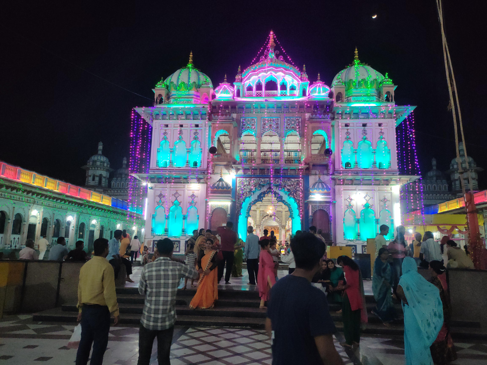

JPG Format Example

About This Image
This original image shows the inner view of Janaki Temple at the night time.It uses several colors and smooth changes between light and dark areas.
Why This Format?
JPG works well for this image because it is designed for phtos with millions of color.JPG helps on keeping the file smaller but keeping the colors intact.
Image source: Original graphic by Gaurav Raj Sah